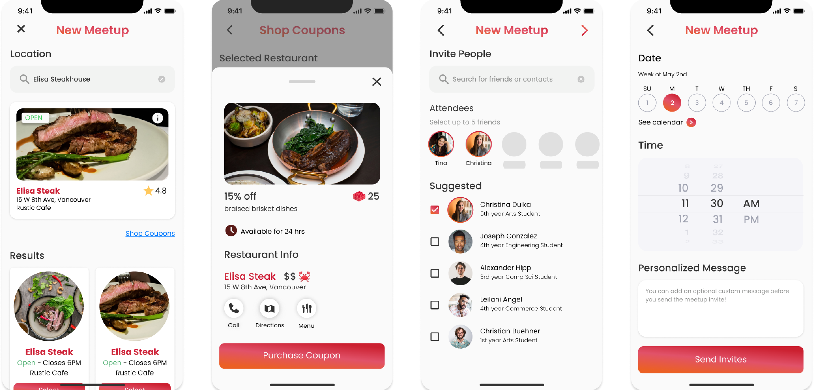
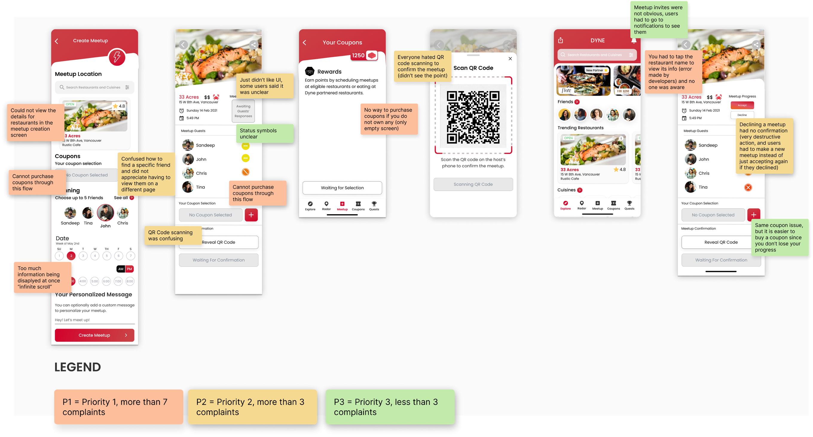
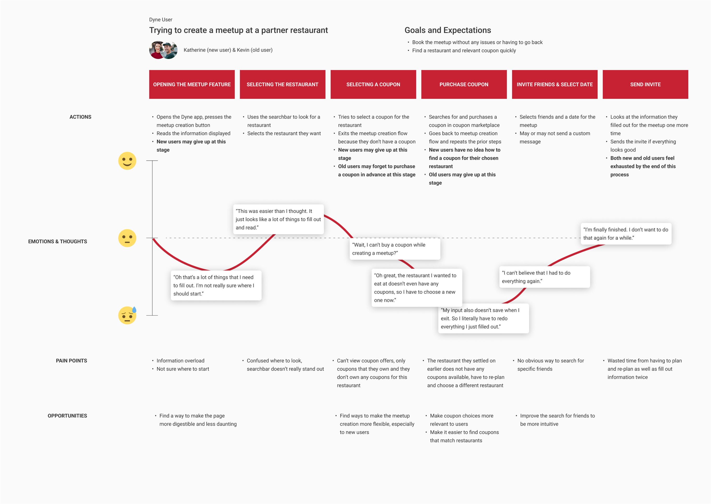
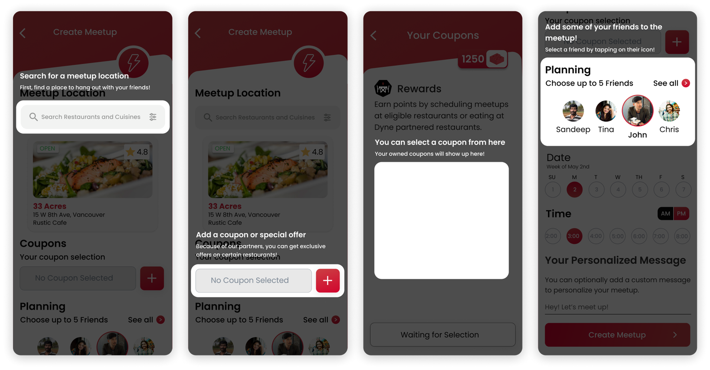
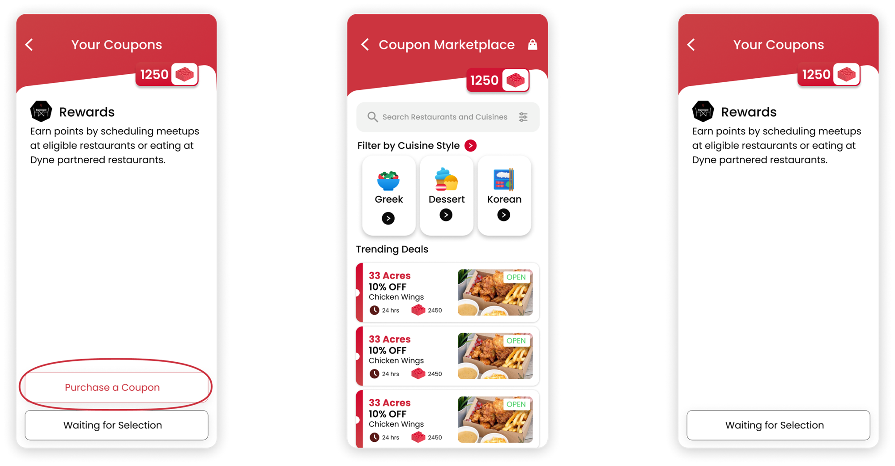
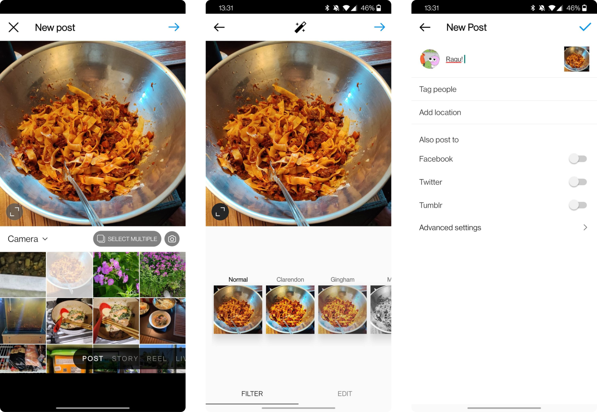
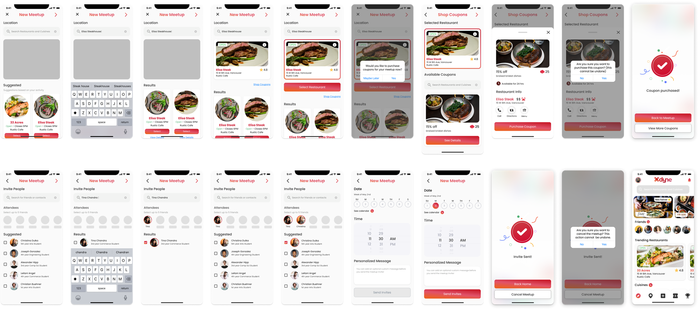
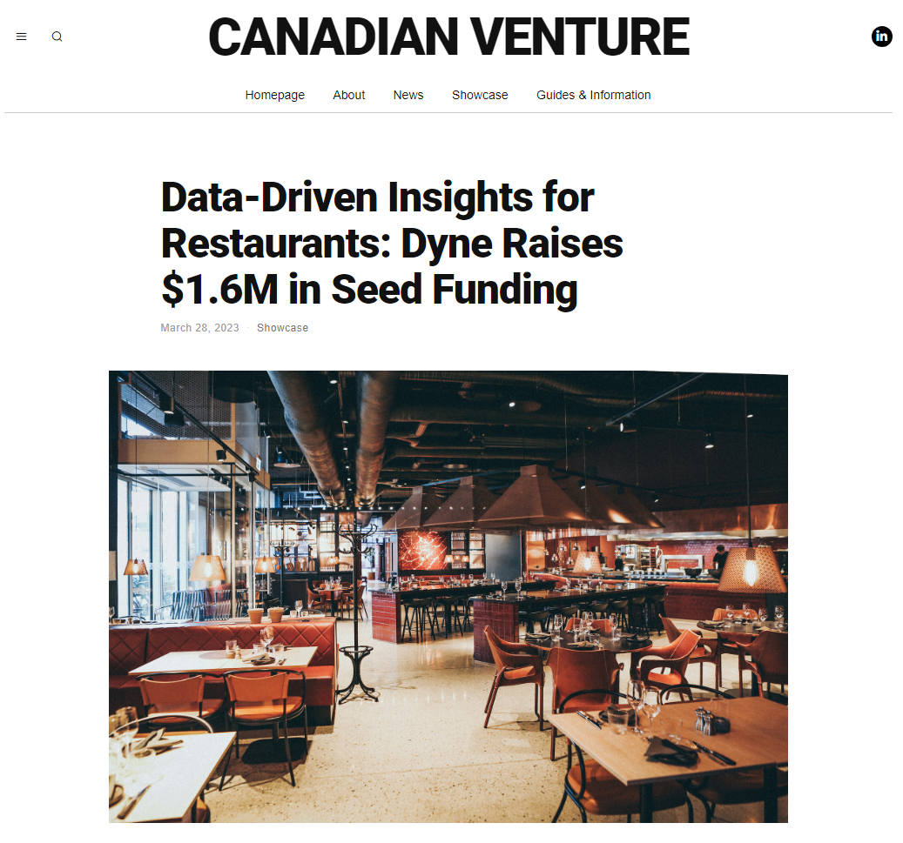

Case Study · Dyne Technologies

Dyne is built around getting people together over a meal, so creating a meetup is the app's core action. It was also where users gave up. Drop-off was high and adoption was low, and testing showed the flow was failing two different groups for two different reasons.
New users hit information overload. Too much unfamiliar content was front-loaded into the first steps, before anyone had a reason to care about it.
Returning users hit a wall. Meetups required a pre-purchased coupon. People who forgot to buy one first had to abandon the flow and start over from the beginning, having already done the work once.

I ran usability sessions with both new and returning users and mapped the journey for each segment, since the friction points weren't in the same places. The number that settled the argument: seven of eight participants left the flow exhausted.
Not confused, not blocked. Exhausted. That pointed at the shape of the whole flow rather than any individual screen, which mattered for what came next.

I didn't open with a rebuild. A structural redesign is expensive and easy to argue against, so I tested the low-effort options first and let them fail on their own merits:
These helped at the margins but didn't move the core problem, which was that the flow asked for too much at once regardless of how well each step was explained. Having the evidence that patches weren't enough is what made the case for restructuring.


I looked at Instagram's post creation flow as a model, not for its visual design but for how it handles the same underlying problem: a multi-step creation task that never feels like one. Three principles carried over.
The modularized flow addressed both segments at once. Coupon options were scoped to the selected restaurant, which cut the choice down to what was actually relevant and folded the purchase into the flow instead of before it. Related actions were grouped into digestible stages, so new users met unfamiliar content a little at a time.


